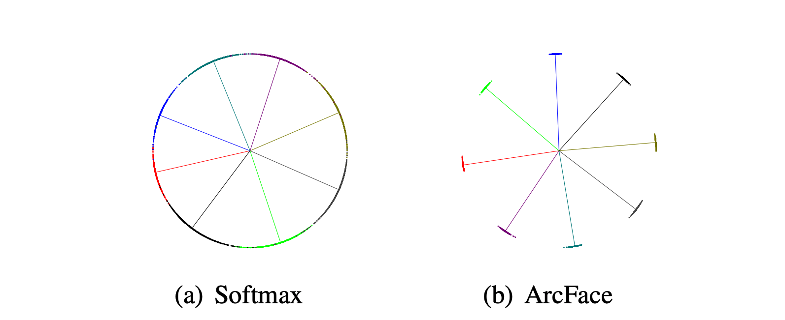
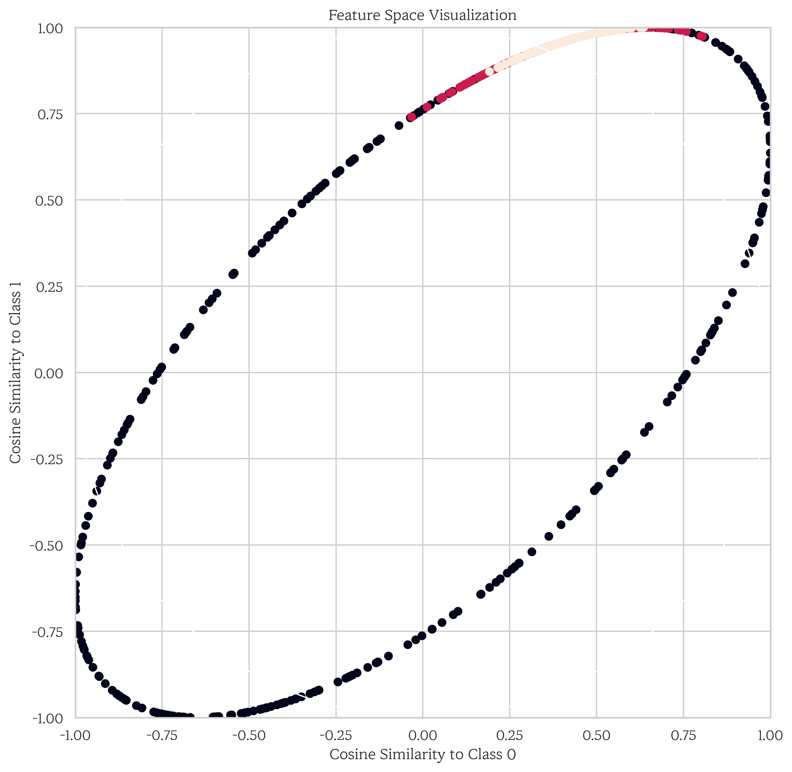
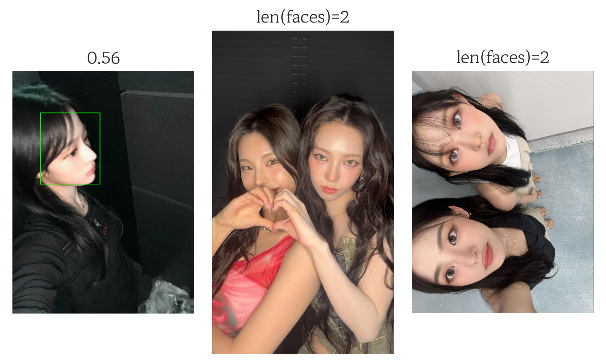
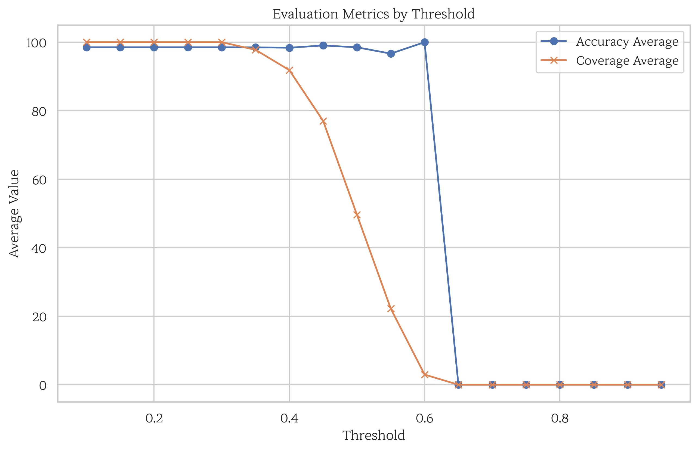
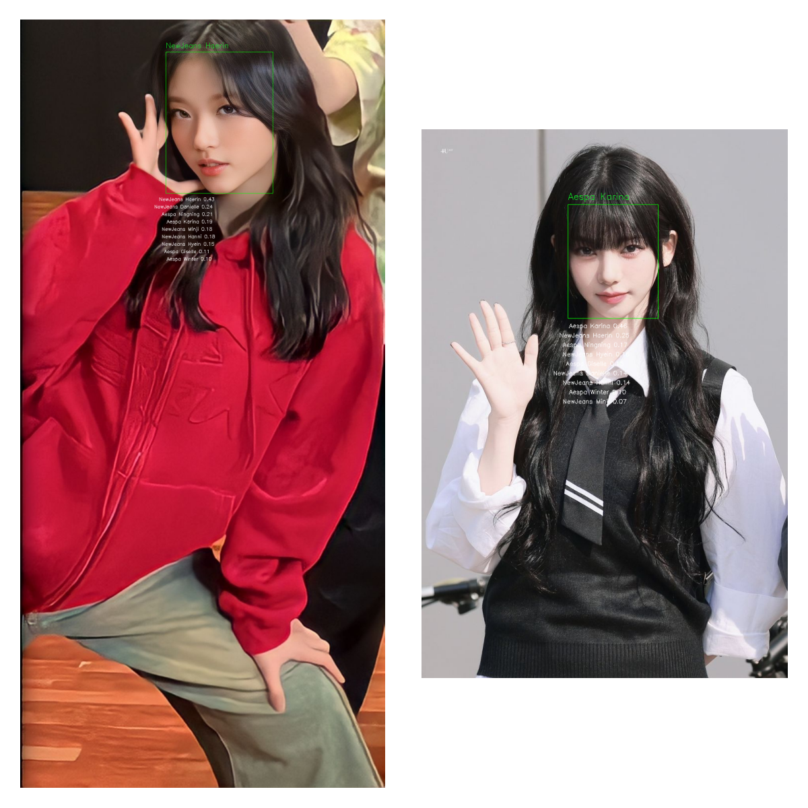
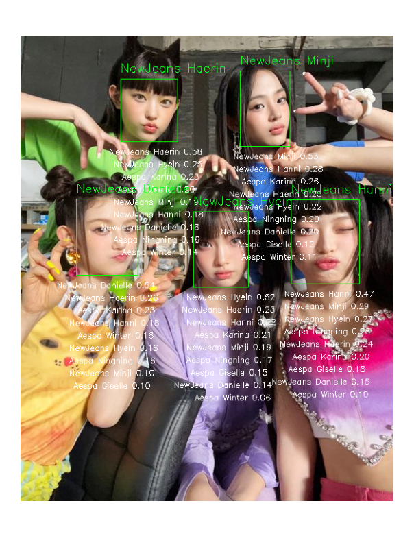
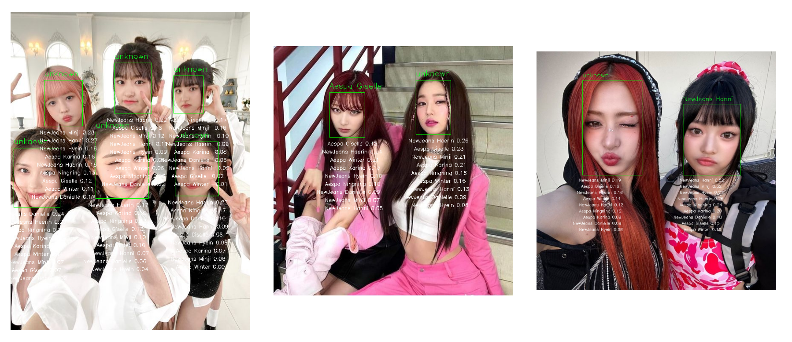
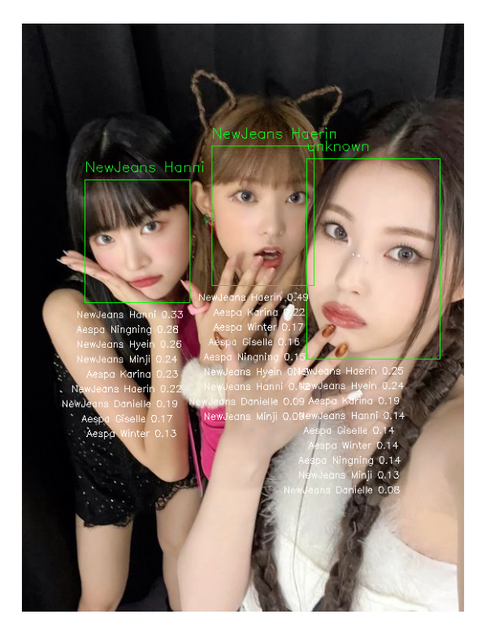

InsightFace 는 이름에서 유추할 수 있듯, 얼굴 인식(Face Recognition)에 쓰이는 프레임워크입니다. 최근 몇 년 동안 급속도로 발전한 얼굴 인식 기술에서 가장 주목받는 라이브러리라고 해도 과언이 아닐 정도입니다. 또한 현재까지도 최첨단(State-of-the-art)에 근사할 정도로 뛰어난 성능을 발휘하기도 합니다.
오늘 InsightFace에서 집중해서 공부해볼 타 프레임워크와의 가장 큰 차별점이자 핵심 요소는 ArcFace 라는 손실 함수입니다.
ArcFace
ArcFace 는 다른 손실 함수와 달리 유클리드 거리(Euclidean Distance)가 아닌 두 벡터 간의 거리인 각거리(Angular Distance), 즉 각도 유사성(Angular Smiliarity)을 측정합니다. 유클리드 거리는 얼굴 데이터와 같은 고차원 공간에서는 의미가 줄어들기 쉽습니다. 반면 각거리는 사진마다 변화가 많은 얼굴 이미지에서 추출한 특징 벡터의 방향성만을 고려하기 때문에, 벡터의 스케일까지 고려하는 유클리드 거리보다 변화의 영향을 덜 받으며 의미를 보존할 가능성이 비교적 높습니다. 이로 인해 접근 방식이 안정적이며, 이는 결과적으로 모델의 일반화 능력을 향상시킵니다.
또한 ArcFace의 특징 벡터는 정규화 됩니다. 이로 인해 두 벡터의 유사도는 벡터의 스케일 변화 대신 방향의 차이만을 감안하게 됩니다. 아래의 이미지에서 확인할 수 있듯, Softmax의 예측은 하이퍼스피어의 표면에 존재하는 클래스(색)의 범위가 명확하지 않지만, ArcFace는 정규화된 까닭에 반지름이 고정된 하이퍼스피어의 표면에서의 클래스 각각의 위치를 명확하게 구분할 수 있습니다.

출처: ArcFace: Additive Angular Margin Loss for Deep Face Recognition, [Fig. 3]
공식은 아래와 같습니다. 여기서 \(\theta_{y_i}\)는 올바른 클래스의 각도, \(m\)은 가산 마진(additive margin) - (일반적으로 0.5 정도의 \(m\)은 28.6도 정도의 각도), \(s\)는 학습 안정성을 위한 스케일링 팩터입니다. ArcFace가 최적화하는 대상은 특징 벡터와 클래스 중심 사이의 각도입니다. 서로 다른 클래스끼리는 마진 값 덕분에 훈련 과정에서 클래스마다 방향을 중심으로 확실히 분리됩니다.
ArcFace는 기존의 얼굴 인식 모델과 비교할 때 눈에 띄는 장점을 보여줍니다. 예를 들어 FaceNet에서 사용하는 삼중항 손실(Triplet Loss)에 비해서, ArcFace는 효율적인 계산을 수행하며 구현하기 쉽고, 샘플 선택에 있어 더 자유롭습니다. 또한 곱 마진을 사용하는 SphereFace와 달리, 합 마진을 사용하기 때문에 비교적 안정적인 성능을 보여줍니다. LFW를 비롯한 벤치마크에서도 99.8% 이상의 정확도를 보이는 등 ArcFace의 뛰어난 성능을 쉽게 확인할 수 있습니다.
다른 손실 함수와의 비교
얼굴 인식에 주로 쓰이는 마진 기반의 손실 함수들인 SphereFace, CosFace, ArcFace를 표로 비교해 보았습니다. 셋 모두 기존의 Softmax보다는 성능이 훨씬 뛰어나며, 주요 벤치마크에서의 성능은 SphereFace < CosFace <= ArcFace 입니다.
손실 함수
SphereFace
CosFace (AM-Softmax)
ArcFace
마진의 종류
곱 각도(Multiplicative Angular)
가산 코사인(Additive Cosine)
가산 각도(Additive Angular)
작동 공간
각 공간
코사인 공간
각 공간
최적화 방식
간접적
간접적
직접적
훈련 안정성
마진의 곱 계산으로 인해 불안정 가능성
대체적으로 안정적
대체적으로 안정적
해석 가능성
보통
보통
높음 (직접 각도를 수정)
구현 난이도
어려움
쉬움
쉬움
성능
좋음
매우 좋음
우수함
주요 특징
각도 마진을 최초로 도입
간단하고 효과적임
측지(Geodesic) 거리를 직접 최적화
단점
수렴 가능성
기하학적인 해석이 어려움
마진 선택의 중요성
구현
PyTorch로 ArcFace 손실 함수를 직접 구현해 보도록 하겠습니다. 전체 코드는 다음과 같습니다.
Input과 가중치의 F.linear(Dot Product, \(\cdot\))를 계산합니다. 다시 말해 해당 식은 Input Feature의 방향과 각 클래스의 중심 사이의 각도(\(\theta\))에 대한 코사인을 구하게 됩니다. 자세한 내용은 Dot Product와 코사인의 관계를 참고하세요.
\(\theta\)값을 도출해내기 위해 acos(아크코사인)을 적용합니다. clamp 함수는 [-1. 1] 범위의 입력에만 정의된 아크코사인 함수를 위해 사용됩니다.
\(\theta\)값에 마진을 더해 다시 코사인으로 변환한 값을 target_logit으로 정의합니다.
마진 값이 들어간 코사인 값인 target_logit을 올바른 클래스에만 적용시킵니다. 일치하는 클래스에 한해 마진을 더해 코사인 유사성을 올리는 것 입니다.
스케일링 계수를 곱하고, 마지막으로 교차 엔트로피 손실을 계산합니다.
시각화

Feature Space
이미지는 검은색, 살구색, 붉은색 3개의 클래스를 생성해 ArcFace로 분류한 하이퍼 스피어를 2차원 평면에서 보여주고 있습니다. 가로축은 class 0과의 코사인 유사도, 세로축은 class 1과의 코사인 유사도를 뜻합니다.
검은색 클래스는 class 0과 class 1 그 어디에도 속하지 않는다고 볼 수 있는데, 이는 두 클래스와의 유사도 모두 -1 구간에 집중되어 분포하고 있는 클래스들의 색이 검은색인 것으로 확인할 수 있습니다. 이는 모두 같은 크기의 호를 가진 하이퍼 스피어의 클래스들이 각도 공간에서 뚜렷한 차이를 보여주며 ArcFace가 세 클래스를 학습하고 명확하게 분리했음을 보여줍니다.
InsightFace를 이용해 간단한 방법으로 얼굴 인식의 정확도를 올릴 수 있는데요. 이들 각각 클래스마다 얼굴의 임베딩을 추출한 후, 각 클래스의 임베딩을 저장하는 것입니다. 그런 다음 새로운 얼굴을 이들과 대조하는 방식으로 클래스 구분을 진행합니다. 일치율을 체크해 가장 높은 클래스가 정답이 될 것입니다. 다만 여기서 어떤 클래스와도 일치율이 임계값을 넘지 않는다면, unknown(알 수 없는)으로 구분됩니다.
그렇다면 우선 임베딩을 구하는 방식에 대해 알아보겠습니다.
임베딩 구하기
일단 InsightFace에서 모델을 가져와야 합니다. InsightFace의 깃허브 페이지에서도 모델을 다운받고 직접 모델을 로드할 수 있으나, 여기서는 편의성을 위해 이전 포스트와 같이 파이썬 패키지를 통해 다운하고 로드하겠습니다. 모델의 크기를 직접 지정해야 하는 등의 세부 설정이 필요하다면 링크를 참조하시기 바랍니다.
임베딩 추출에 적합하지 않은 경우는 두 가지 입니다.
사진 내의 인식되는 얼굴이 여러 개일 경우
Detection Score가 수준 이하일 때
다음은 코드를 통해 알아본 임의의 이미지 100개 중 부적합한 이미지들의 예시입니다. 얼굴 불인식의 기준은 Detection Score=0.63 미만입니다.
Code
plt.figure(figsize=(20, 20))d_faces =0file_paths = [Path(category)/Path(filename) for category in categories for filename in os.listdir(raw_dir/category)]random.shuffle(file_paths)# 임의의 이미지 100개를 평가for i inrange(100): file_path = raw_dir/file_paths[i] img = cv2.imread(str(file_path)) faces = model.get(img)# 1. 이미지 내 얼굴이 1개가 아닐 경우iflen(faces) !=1: d_faces +=1 img_rgb = cv2.cvtColor(img, cv2.COLOR_BGR2RGB) plt.subplot(5, 10, d_faces) plt.axis('off') plt.imshow(img_rgb) plt.title(f'{len(faces)=}')continuefor face in faces:# 2. 얼굴 인식 점수가 낮을 경우if face.det_score <0.63: d_faces +=1 (x1, y1, x2, y2) =map(int, face.bbox) face_img = img[y1:y2, x1:x2]if face_img.size >0: cv2.rectangle(img, (x1, y1), (x2, y2), (0, 255, 0), 2) img_rgb = cv2.cvtColor(img, cv2.COLOR_BGR2RGB) plt.subplot(5, 10, d_faces) plt.axis('off') plt.imshow(img_rgb) plt.title(f'{face.det_score:.2f}')plt.tight_layout()plt.show()

Examples
이들의 임베딩을 구해서 저장해 보겠습니다.
평가
위의 코드는 각각 클래스마다 30개의 임베딩을 추출하고, 15개는 얼굴 인식 임베딩(known_embeddings), 나머지 15개는 임베딩의 정확도를 평가하기 위한 임베딩(unknown_embeddings)으로 저장합니다. 평가 방식은 제가 참고한 글에서도 이미 언급했듯이, Flatten(평탄화)된 임베딩보다는 임베딩 Average(평균)와 비교하여 인식하는 편이 성능이 낫습니다.
이유는 일반화 능력 향상에 있습니다. Average 방식은 같은 얼굴의 여러 임베딩을 평균 계산하여 노이즈와 이상치 확률을 감소시킵니다. 사진에서 볼 수 있는 같지만 변형된 얼굴을 일반화하므로 정확도 향상에 도움이 됩니다. 반면 Flatten 방식이 유리한 점은 계산이 간단하다는 것입니다. 임베딩이 제대로 추출했다는 가정하에는 좋은 결과를 보여줄 수 있습니다.
따라서 저는 Average 방식으로만 임베딩을 평가하고 테스트에 사용하겠습니다. Threshold에 따른 unknown_embedding의 평가 결과입니다. 그래프에서 Accuracy는 얼굴 일치 여부를 Coverage는 얼굴 식별 여부를 뜻합니다.
Code
import matplotlib.pyplot as pltimport numpy as np# Define a range of threshold valuesthreshold_values = np.arange(0.1, 1.0, 0.05)# Lists to store the averages for each thresholdacc_averages = []cov_averages = []for threshold in threshold_values: pred_names = search_average(known_embeddings, known_names, unknown_embeddings, threshold=threshold) acc_average, cov_average = evaluate(unknown_names, pred_names) acc_averages.append(acc_average) cov_averages.append(cov_average)# Plottingplt.figure(figsize=(10, 6))plt.plot(threshold_values, acc_averages, label='Accuracy Average', marker='o')plt.plot(threshold_values, cov_averages, label='Coverage Average', marker='x')plt.xlabel('Threshold')plt.ylabel('Average Value')plt.title('Evaluation Metrics by Threshold')plt.legend()plt.grid(True)plt.show()

Embedding Graph
0.4를 지나기 전에 두 선이 교차하는 구간이, 0.6을 지나자 두 지수 모두 급격하게 감소하는 구간이 관찰됩니다. 교차하는 구간인 0.3 정도를 최적의 Threshold로 정하겠습니다.
테스트
먼저 데이터 셋 내의 랜덤한 이미지를 대상으로 인식한 결과입니다.

Test Case 1
이 둘은 일치하는 인물에 0.4 이상의 인식률을 보이며, 인식할 수 있는 모든 인물 내에서 큰 차이 또한 나타냅니다.
Test Case 2
두 사람의 얼굴이 포착됐지만, 클래스에 존재하지 않는 한 사람은 0에 가까운 유사도를 보이기 때문에 인식되지 않습니다. 인식된 연예인은 역시 0.4 이상 일치하는 결과를 보여줍니다.
역시 0.5 이상의 일치율을 보입니다.
유사도가 가장 높은 인물은 정확하지만 임계 값을 넘지 못해 unknown으로 출력됩니다.
정확하게 출력합니다.
다음은 데이터 셋 외부의 이미지로, 다른 걸그룹 혹은 클래스에 존재하지 않는 사람과의 이미지에서 테스트 해보겠습니다.

Test Case 3
뉴진스 다섯 멤버는 모두 꽤 높은 정도로 인식하는 모습입니다.

Test Case 4
이 이미지들에선 클래스 내부에서 찾을 수 없는 인물 또한 잘 구분해 올바르게 매치합니다.

Test Case 5
다만 여기선 인식의 정도가 높진 않지만 다른 사람을 인식하는 모습입니다.
결론
InsightFace의 임베딩을 사용하면 저번 시간에 시도했던 이미지 인식 모델보다 정확도가 상당히 높아진다는 것을 알 수 있었습니다. 또한 InsightFace가 사용하는 얼굴 인식에 특화된 손실 함수 ArcFace가 왜 정확도가 높은지, 코사인 유사도와 구현 등에 대해서 자세히 알아보았습니다.
여기서 더 정확도를 높이기 위해서는, 이미지 선별을 통해 좋은 임베딩을 추출하고, 임베딩의 수를 늘려서 일반화 정도를 높이는 방안이 고려됩니다. 현재의 적은 클래스를 감안하면, 클래스의 수를 늘린 후에도 정확도를 높일 수 있을지는 실험이 더 필요하겠습니다.
얼굴 인식에 대한 글은 이만 줄이고 다음 시간에는 조금 더 재밌는 포스트로 찾아 오겠습니다.